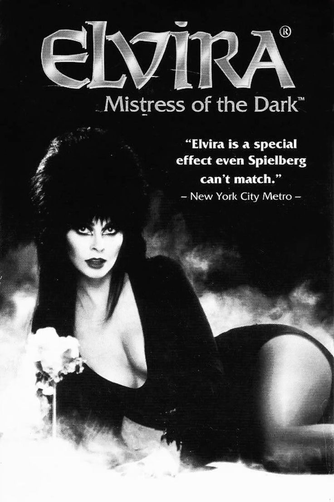
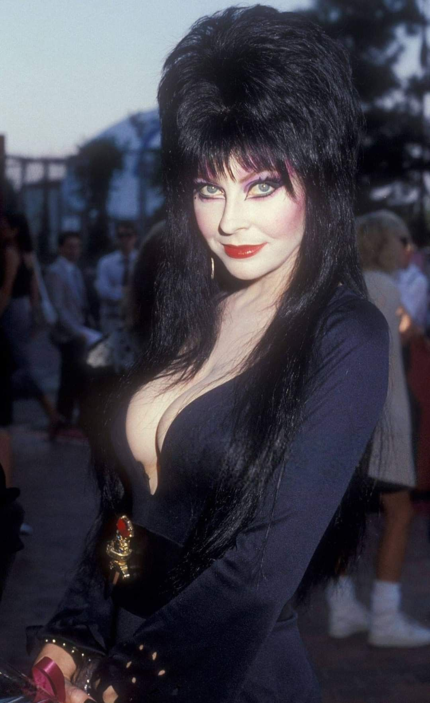
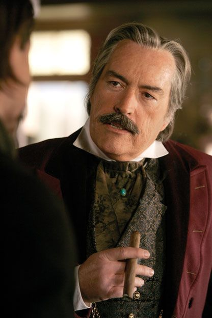
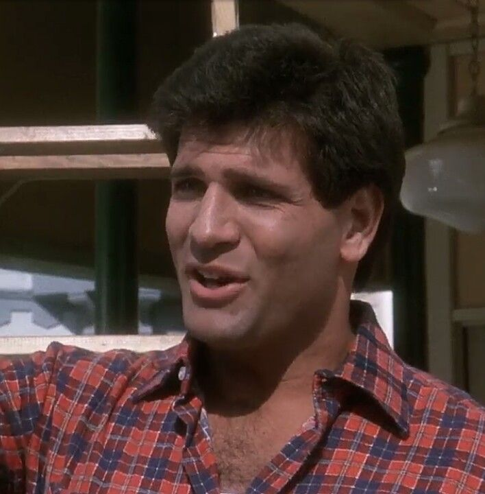

Chastity
Chastity Pariah (interpretada por Edie McClurg): A líder moralista e puritana da conservadora cidade de Fallwell, que lidera a cruzada contra Elvira.

Elvira: A Rainha das Trevas (1988) é uma comédia de terror americana dirigida por James Signorelli e estrelada por Cassandra Peterson como a excêntrica apresentadora de TV. Desenvolvido após o sucesso do programa Elvira's Movie Macabre, o roteiro — coescrito por Peterson com ex-colegas do grupo de comédia The Groundlings — acompanha a protagonista enquanto ela tenta se adaptar após herdar uma mansão em uma comunidade extremamente puritana.
Apesar de não ter alcançado sucesso comercial na época de seu lançamento (arrecadando US$ 5,5 milhões contra um orçamento de US$ 7,5 milhões) e de ter recebido críticas mistas que renderam a Peterson indicações simultâneas ao Saturn Award e ao Framboesa de Ouro, o longa se tornou um clássico cult ao longo dos anos. O impacto do filme garantiu lançamentos remasterizados e uma continuação em 2001, Elvira's Haunted Hills.
Elvira, uma popular e voluptuosa apresentadora de TV em Los Angeles, pede demissão após sofrer assédio do dono da emissora e precisa de 50 mil dólares para montar seu próprio show em Las Vegas. Ao saber que é herdeira da falecida tia-avó Morgana, ela viaja para a conservadora cidade de Fallwell, Massachusetts, onde recebe uma mansão caindo aos pedaços, um cãozinho metamorfo chamado Gonk e um misterioso livro de receitas — que na verdade é um poderoso livro de feitiços.
Sua chegada escandaliza os adultos e o conselho moralista da cidade, liderado por Chastity Pariah, mas conquista os adolescentes locais e o dono do cinema, Bob Redding, por quem Elvira se apaixona. Sem saber do potencial mágico do livro, Elvira tenta usá-lo e acidentalmente invoca monstros e cria uma poção afrodisíaca que causa confusão em um evento da cidade. Paralelamente, seu tio Vincent Talbot, que é um feiticeiro oculto, tenta comprar ou roubar o grimório para conquistar o mundo.
Aproveitando o pânico moral, Vincent manipula a população para prender Elvira e condená-la a ser queimada na fogueira por bruxaria. Ela é salva graças à intervenção de Bob, do cão Gonk e do seu próprio anel mágico, que invoca uma tempestade e apaga as chamas. Na mansão, Elvira e Vincent travam um duelo de magia que resulta no banimento do vilão para o submundo e na destruição da casa.
Livre do perigo e reconciliada com os moradores arrependidos, Elvira descobre que herdou a fortuna de Vincent por ser sua única parente viva. Com o dinheiro em mãos, ela se despede de Bob e realiza seu sonho de estrear um grande show musical em Las Vegas.

Elvira / Tia Morgana Talbot (interpretada por Cassandra Peterson): A protagonista, uma apresentadora gótica e irreverente de programas de TV de filmes de terror, que herda uma mansão e um livro de feitiços de sua tia-avó Morgana.

Tio-avô Vincent Talbot (interpretado por W. Morgan Sheppard): O grande antagonista da história, um feiticeiro maligno que quer roubar o livro de receitas/magias de Elvira para conseguir poderes sombrio.

Bob Redding (interpretado por Daniel Greene): O gentil e atraente mecânico da cidade de Fallwell que ajuda Elvira.
Chastity Pariah (interpretada por Edie McClurg): A líder moralista e puritana da conservadora cidade de Fallwell, que lidera a cruzada contra Elvira.